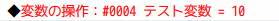
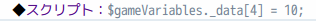
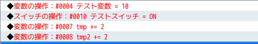

マップのリフレッシュの話
マップのリフレッシュとは
変数やスイッチ、セルフスイッチを変更したり、メンバの加入・脱退、アイテムの増減をするとマップのリフレッシュが走ります。
リフレッシュとはマップ上のイベントの条件とコモンイベントの条件をチェックする処理です。
変数やスイッチの値が変わったということはイベントの発生条件に影響があるかもしれないので、すべてチェックしなければいけません。
マップの全イベントの全ページの条件をチェックし、コモンイベントは自動・並列イベントの条件をチェックします。
この処理は重いのか
このリフレッシュが重いと考え、並列コモンで変数・スイッチの変更を避けるという話をよく聞きます。
それでも代入したいときは、スクリプトを使ってリフレッシュを回避しつつ変数・スイッチを変更するという手段も取られるようです。
ただ、一般的なプロジェクトではマップ上のイベントとコモンイベントの条件をチェックするぐらいは重い処理ではないと思います。並列コモンで普通に変数に毎フレーム代入しているプロジェクトのパフォーマンス測定をしたこともありますが、それが重さに全くつながってはいませんでした。
条件の判定を拡張するプラグインなど、リフレッシュ契機で動作するプラグインが毎フレームのリフレッシュの重さに影響を与える可能性もあるので、一概には重くないとは言えないかもしれませんが。
リフレッシュを回避して変数・スイッチに代入するスクリプト
リフレッシュを回避するためにスクリプトを使って変数・スイッチを変更するという手段があります。
例えば、デフォルトの変数操作は以下のスクリプトで書き換えるというものです。


たしかにこれだとリフレッシュはされませんが、デメリットが大きくチューニングをするのは非常に難しいので個人的にはおすすめできません。
以下にデメリットを述べていきます。
リフレッシュをしないということ
リフレッシュをしないということは、各イベントのページが更新されません。
もしスクリプトで置き換えた変数・スイッチをページの条件に使っていた場合、内容が変わったのにイベントが開始されないということが起きます。
可読性・記述ミスの問題
上記のツクールデフォの変数操作とスクリプトの操作を見ればわかりますが、スクリプトの方は番号しか表示できず、何の変数なのかわかりません。
スクリプトを書くときも何番が使いたいものなのか調べなくてはならず、記述をミスる可能性が高いです。
チューニングの難しさ
このリフレッシュですが、変数やスイッチを変更した瞬間に行われません。
変更した次のフレームにまとめて1回だけ行われます。
以下は4つ操作していますが、同一フレームなのでリフレッシュは1回です。

例えば、動作している全並列コモンにある変数操作10個あるうちの9個をスクリプトに置き換えてもリフレッシュを防いだことにはならず、すべての変数・スイッチの操作を把握して置き換えなくてはいけません。
これは非常に難しいと思います。
また、もし毎フレームリフレッシュをリクエストするようなプラグインを導入していた場合、この施策は意味のないことになってしまいます。
終わりに
確認用にリフレッシュしたときにコンソールにフレーム番号とメッセージを出すプラグインを作ったので興味があればどうぞ。
DLはこちら